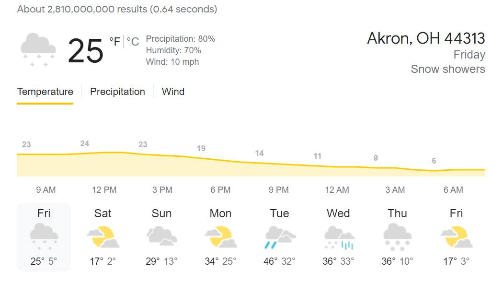

Timeline photos
I have just been told that all women's shelters in Summit County are currently full. If anyone has heard different please let me know.
I know we have an emergency shelter at 111 East Voris Street, Akron 44311. But I've heard that they too are full.
Look at the temperatures. How does this happen in America?